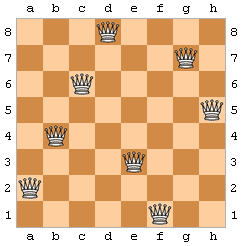
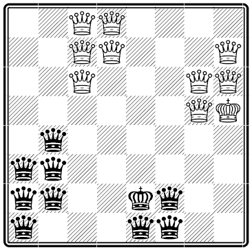

Essence' Examples
Overview
- Balanced Incomplete Block Design (BIBD)
- Farm Puzzle
- Grocery Puzzle
- Langford's Number Problem
- N-Queens Problem
- Peaceable Army of Queens
- Quasigroup Problem
- Send More Money Problem
- SONET Problem
- Sportsscheduling
- Sudoku
1. Balanced Incomplete Block Design (BIBD)
The problem is to assign v objects to b blocks such that such that each block contains k different objects, each object occurrs in exactly r different blocks and every 2 distinct objects occurr in exactly l blocks. We represent the problem by a vxb matrix of booleans, where matrix[i,j] equals 1(true) iff object i has been assign to block j. Below is the solution for the sample instance with v,b,k,r,l = 7,7,3,3,1.
0, 0, 0, 0, 1, 1, 1
0, 0, 1, 1, 0, 0, 1
0, 1, 0, 1, 0, 1, 0
0, 1, 1, 0, 1, 0, 0
1, 0, 0, 1, 1, 0, 0
1, 0, 1, 0, 0, 1, 0
1, 1, 0, 0, 0, 0, 1
The BIBD problem model is given in the examples directory together with some parameter instances.
2. Farm Puzzle
This is a very simple puzzle: A farmer has 7 animals on his farm: pigs and hens. They all together have 22 legs. How many pigs and how many hens does the farmer have?
You can find the Farm Puzzle problem model in the examples directory .
3. Grocery Puzzle
A girl goes to a shop and buys 4 items. When the cashier charges 7.11 Euro he notices that he accidently multiplied the prices of the items. So he adds up the prices and suprisingly he gets the same amount, 7.11 Euro. How much did each item cost?
You can find the Grocery problem model in the examples directory .
4. Langford's Number Problem
We have a model of the Langford-2 problem: arrange 2 sets of positive integers 1..k to a sequence, such that, following the first occurence of an integer i, each subsequent occurrence of i, appears i+1 indices later than the last. For example, for k=4, a solution would be 41312432.
We model this problem using a 1-dimensional array 'position' with length 2*k
where the first k entries of the array hold the position of the i-th
number, i.e. position[2] holds the position of the first
occurrence of '2' in the sequence. In the sample solution for k=4,
position[2] would hold the value '5', because '2' occurs
first as 5th number in the sequence.
The second k entries in the array hold the second occurrence of each
value in the sequence. Below we try to illustrate the relation
between position and the sequence for the example with k=4.
sequence : 4 1 3 1 2 4 3 2 position [2,5,3,1,4,8,7,6] of numbers 1 2 3 4 1 2 3 4
You can find the Langford's problem model in the examples directory .
5. N-Queens Problem
Place n queens on an nxn chessboard without attacking each other. A sample solution for n=8 is given in the picture.
|  | We have two models of the n-queens problem: a standard n-Queens model and a more sophisticated n-Queens model, both available in the in the examples directory . |
6. Peaceable Army of Queens Problem
|
Place 2 equally-sized armies of queens (white and black) on a chess board without attacking each other and maximise the size of the armies. The picture to the right shows an example of two armies of queens (including a king on each side), where no queens of different colours can attack another. We model the problem by representing the board with an nxn matrix (2-dimensional array) that can take 3 values: 0,1 or 2. If a field is set to 0, it is not occupied, if a field is set to 1/2 it is occupied by a white/black queen. You can find the Peaceable Army of Queens problem model in the examples directory . |
 |
7. Quasigroup Existence Problems
A quasigroup is an mxm miltiplication table of integers 1..m, where each element occurrs exactly once in each row and column and certain multiplication axioms hold. Depending on the multiplication axiom, the quaisgroup is enumerated (i.e. quasigroup3 denotes that mutliplication axiom 3 holds). We have models for several versions of the quasigroup existence problems:- Quasigroup3: QG3 idempotent model and QG3 non-idempotent model from the examples directory .
- Quasigroup4: QG4 idempotent model and QG4 non-idempotent model from the examples directory .
- Quasigroup5: GQ5 idempotent model and GQ5 non-idempotent model from the examples directory .
- Quasigroup6: QG6 problem model from the examples directory .
- Quasigroup7: QG7 problem model from the examples directory .
8. Send More Money
The Send More Money problem, where one has to find a solution to the following sum where every letter stands for a distinct number between 0 and 9:S E N D + M O R E ---------- M O N E YThe Send-More-Money problem model can be found in the examples directory .
9. SONET Problem
The SONET problem is a network design problem: set up a network between n nodes, where only certain nodes require a connection. Nodes are connected by putting them on a ring, where all nodes on a ring can communicate. Putting a node on a ring requires a so-called ADM, and each ring has a capacity of nodes, i.e. ADMs. There is a certain amount of rings, r, that is available. The objective is to set up a network by using a minimal amount of ADMs.
The problem model has the amount of rings ('r'), amount of nodes('n'), the 'demand' (which nodes require communication) and node-capacity of each ring ('capacity_nodes') as parameters. The assignement of nodes to rings is modelled by a 2-dimensional matrix 'rings', indexed by the amnount of rings and nodes. The matrix-domain is boolean: If the node in column j is assigned to the ring in row i, then rings[i,j] = 1 and 0 otherwise. So all the '1's in the matrix 'rings' stand for an ADM. Hence the objective is to minimise the sum over all columns and rows of matrix 'rings'.
The SONET problem model can be found in the examples directory .10. Sportsscheduling Problem
The sports scheduling problem is to schedule a sport competition with a certain amount of teams, weeks and periods such that teams play only once a week, every team plays at most twice a period and no game is repeated.
The Sports Scheduling problem model can be found in the examples directory .
11. Sudoku

|
Sudoku is a popular puzzle: assign each field of the 9x9 board a number between (1..9) such that every row, column and 3x3 box contains different numbers. A sample sudoku puzzle is given on the left. The Sudoku problem model can be found in the examples directory . |